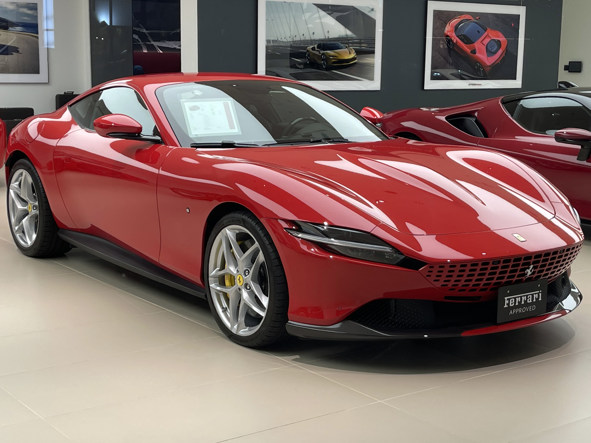

Ferrari Car's


LaFerrari and Ferrari Roma represent two different sides of Ferrari’s legendary automotive heritage. is an exclusive hypercar that combines a powerful V12 engine with advanced hybrid technology, delivering exceptional performance, acceleration, and precision. In contrast, the Ferrari Roma is a sophisticated grand touring sports car inspired by the elegance of 1950s and 1960s Rome. With its sleek design, powerful V8 engine, and refined interior, the Roma perfectly combines performance, comfort, and Italian luxury. Together, these models showcase Ferrari’s commitment to innovation, performance, and timeless design.